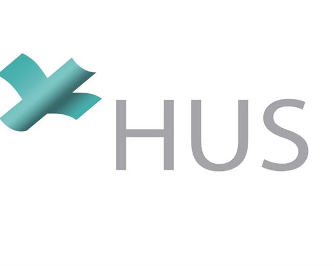

Kokemus
Länsi-Uudenmaan hyvinvointialue
Sairaanhoitaja, Samarian terveysasema
08/2021 - Present

Helsingin ja Uudenmaan sairaanhoitopiiri
Sairaanhoitaja, HUS Akuutti, Jorvin päivystyspoliklinikka
12/2020 - 01/2021 & 05/2021 - 08/2021
Sairaanhoitaja, HUS Vatsakeskus, Osasto K7
01/2021 - 05/2021
Helsingin ja Uudenmaan sairaanhoitopiiri
Lähihoitaja, HUS Vatsakeskus, Kirurgian poliklinikka
04/2017 - 09/2017

Subway
Ravintolatyöntekijä
10/2010 - 12/2016